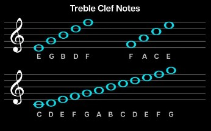

les plus anciennes écritures en papier
Voici quelques mots en musique
En termes plus généraux, la musique est l’arrangement du son pour créer une combinaison de forme, d’harmonie, de mélodie, de rythme ou de contenu expressif. Les définitions de la musique varient selon la culture , bien qu’il s’agisse d’un aspect de toutes les sociétés humaines et d’un universel culturel. Bien que les chercheurs conviennent que la musique est définie par quelques éléments spécifiques, il n’y a pas de consensus sur leurs définitions précises. La création musicale est généralement divisée en composition musicale, improvisation musicale et interprétation musicale, bien que le sujet lui-même s’étende aux disciplines académiques, à la critique, à la philosophie, à la psychologie et aux contextes thérapeutiques. La musique peut être jouée ou improvisée à l’aide d’une vaste gamme d’instruments, y compris la voix humaine, et est donc souvent créditée pour son extrême polyvalence et l’opportunité pour la créativité
